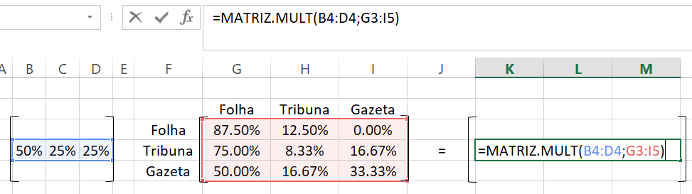
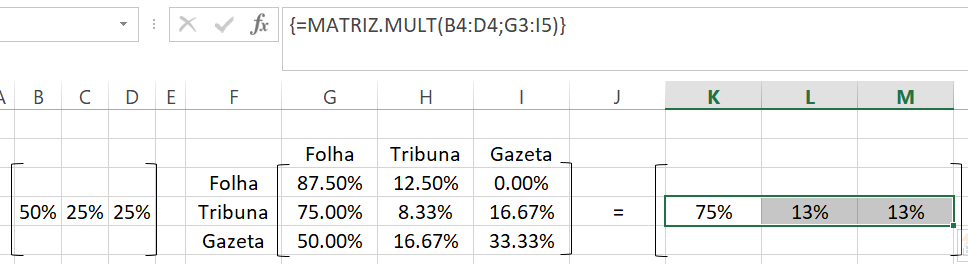
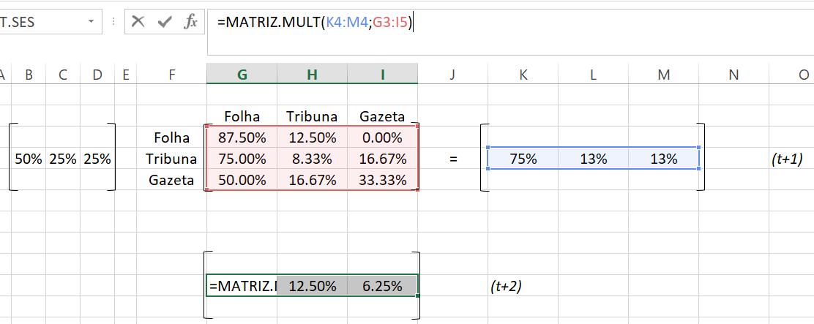
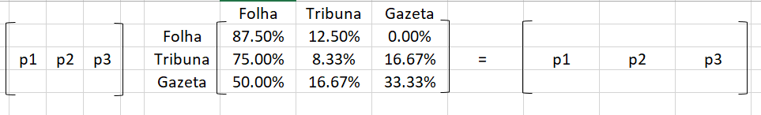
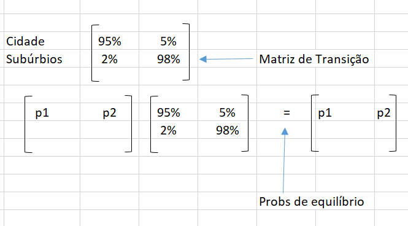
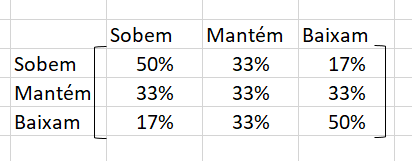

[em construção]
[em construção]
[em construção]
As sequências de observações ou resultados experimentais às vezes são consideradas como independentes, isto é, supõe-se que a probabilidade de se observar um resultado particular seja constante. A generalização mais simples desse modelo permite que a probabilidade do resultado de qualquer experimento ou observação dependa do resultado da observação imediatamente precedente, mas não dependa das outras observações anteriores. Um processo ou sequência deste tipo denomina-se um processo em cadeia de Markov de primeira ordem, uma cadeia de Markov de primeira ordem ou um processo de Markov de primeira ordem e os seus estados estacionários ou de equilíbrio.
Suponha que o resultado de cada sequência de experimentos ou observações esteja num conjunto de possíveis resultados \(a_{1},a_{2},\ldots,a_{r}\). A probabilidade do resultado \(a_{j}\) de cada experimento ou observação depende no máximo do resultado da observação imediatamente precedente. Estas prbabilidades são denotadas por \(p_{ij},i=1,2,\ldots,r\) e \(j=1,2,\ldots,r\), onde \(p_{ij}\) representa a probabilidade do resultado \(a_{j}\) de qualquer observação particular, dado que o resultado \(a_{i}\) ocorreu na observação imediatamente anterior. Os resultados \(a_{1},a_{2},\ldots,a_{r}\) são denominados estados e as \(p_{ij}\) são denominadas probabilidades de transição de uma cadeia de Markov de primeira ordem. Se é suposto que o processo se inicia em algum estado particular, as probabilidades de várias sequências de observações podem ser calculadas. Assim, uma cadeia de Markov de primeira ordem está determinada se forem especificadas os seus possíveis estados de Markov de primeiraa ordem está determinada se forem especificadas os seus possíveis estados, a distribuição inicial de probabilidade e a matriz de transição.
As probabilidades de transição podem ser resumidas numa matriz quadrada. A matriz das probabilidades de transição de um processo de Markov, com estados \(a_{1},a_{2},\ldots,a_{r},\) é
\[ p={p_{ij}}=\begin{bmatrix} p_{11}&p_{12}&\ldots&p_{1r}\\ p_{21}&p_{22}&\ldots&p_{2r}\\ \vdots&\vdots& &\vdots\\ p_{r1}&p_{r2}&\cdots&p_{rr} \end{bmatrix} \]
Observe que a soma dos elementos de cada linha da matriz \(p\) é 1, pois os elementos da \(i-\)ésima linha representam as probabilidades de todas as possíveis transições quando o processo está no estado \(a_{i}\). Isto é,
\[ \displaystyle\sum^{r}_{j=1}p_{ij}=1\quad \mbox{para}\quad i=1,2,\ldots,r \] Assim, se a distribuição de probabilidades dos estados no ensaio \(n\) é \([p_{1},p_{2},\ldots,p_{r}]\), a distribuição de probabilidade dos estados no ensaio \(n+1\) é:
\[ [p_{1}, p_{2},\ldots,p_{r}]\begin{bmatrix} p_{11}&p_{12}&\ldots&p_{1r}\\ p_{21}&p_{22}&\ldots&p_{2r}\\ \vdots&\vdots&\vdots\\ p_{r1}&p_{r2}&\cdots&p_{rr} \end{bmatrix}= \begin{bmatrix} \displaystyle\sum^{r}_{i=1}p_{i}p_{i1},\sum^{r}_{i=1}p_{i}p_{i2},\ldots,\sum^{r}_{i=1}p_{i}p_{ir} \end{bmatrix} \]
A distribuição de probabilidade dos resultados da \(n-\)ésima observação de um processo de Markov de primeira ordem é o produto do vetor das probabilidades iniciais pela \(n-\)ésima potência da matriz de transição. Isto pode ser mostrado, estendendo-se os argumentos da seção anterior. Se o vetor das probabilidades iniciais é denotado por \(p_{0}\) e o vetor de probabilidades no estágio \(n\) é denotado por \(p_{n}\), então \(p_{1}=p_{0}p,\,\,p_{2}=p_{1}p=p_{0}p^{2},\,p_{3}=p_{2}p=p_{0}p^{3},\ldots,p_{n}=p_{0}p^{n}\). Com algumas hipóteses matemáticas pouco restritivas, pode se mostrar que um processo de Markov de primeira ordem se aproxima de um estado estacionário ou equilíbrio, quando o número de observações aumenta, isto é, quando \(n\) tende ao infinito.
Por definição, quando uim processo de Markov de primeira ordem está no equilíbrio, a probabilidade de cada estado ou resultado possível é constante, não variando de uma observação para outra. O processo de Markov de primeira ordem utilizando para descrever situações da Administração e da Economia preenche, quase invariavelmente, as condições matemáticas de equilíbrio ou estacionário, quando o número de observações ou transições tende ao infinito, a distribuição da probabilidade estacionária (de equilíbrio) de seus estados é única e depende somente da matriz de transição e não da distribuição inicial de probabilidade dos estados. Toda cadeia de Markov particular está claramente num só estado particular, para qualquer observação dada. O significado físico e computacional da estacionariedade torna-se assim, claro apenas se um número de processos de Markov estpa simultaneamente no mesmo estado de equilíbrio. Neste caso, se existem \(N\) de tais processos estejam no estado \(i\) para qualquer observação dada. Assim, se \(N\) é grande, um estado de equilíbrio macroscópio é mantido com um grande número de transições em direções opostas. Muitos equilíbrios estatísticos em Física são desta natureza.
Do ponto de vista computacional, obtém-se a distribuição de probabilidade estacionária \([p_{1},p_{2},\ldots,p_{r}]\) dos estados de uma cadeia de Markov, resolvendo-se as equações dadas em forma matricial por
\[ [p_{1},p_{2},\ldots,p_{r}] \begin{bmatrix} p_{11}&p_{12}&\ldots&p_{1r}\\ p_{21}&p_{22}&\ldots&p_{2r}\\ \vdots&\vdots& &\vdots\\ p_{r1}&p_{r2}&\cdots&p_{rr} \end{bmatrix}= [p_{1},p_{2},\ldots,p_{r}] \]
onde \(p_{i}\) é a probabilidade de estar no estado \(i,i=1,\ldots,r\) e \(\displaystyle \sum^{r}_{i=1}p_{i}=1\). Isto envolve a solução das \(r\) equações lineares independentes
\[\begin{align} \displaystyle\sum^{r}_{i=1}p_{i}p_{ij}&=p_{j}\quad\mbox{para}\quad j=1,2,\ldots,r\,\,(r-1\,\,\mbox{das quais são independentes})\\ \displaystyle\sum^{r}_{i=1}p_{i}&=1 \end{align}\]
Observe que estas equações realmente definem o equilíbrio: Se \([p_{1},p_{2},\ldots,p_{r}]\) é a distribuição de probabilidade dos estados para uma dada observação, o produto
\[ [p_{1},p_{2},\ldots,p_{r}]\begin{bmatrix} p_{11}&p_{12}&\ldots&p_{1r}\\ p_{21}&p_{22}&\ldots&p_{2r}\\ \vdots&\vdots& &\vdots\\ p_{r1}&p_{r2}&\ldots&p_{rr} \end{bmatrix} \]
dá a distribuição de probabilidade dos estados para a próxima observação. Se esta distribuição também é \([p_{1},p_{2},\ldots,p_{r}]\), da mesma forma que a observação precedente, então o sistema está em desequilíbrio.
Suponha que, no 1 de setembro, dos assinantes de uma determinada região, a Folha tenha 50%, a Tribuna, 25% e a Gazeta outros 25%. Durante o mês de setembro, a Folha retém 87,5% de seus assinantes e perde 12,5% deles à Tribuna, esta retém 8,33% de seus assinantes e perde 75% deles à Folha e 16,67% deles à Gazeta; a Gazeta retém 33,33% de seus assinantes e perde 50% deles à Folha e 16,67% deles à Tribuna. Suponha que não haja novos assinantes e que nenhum deles deixe de sê-lo.
A matriz de transição é:
multiplicando a matriz linha no estado inicial (1 de setembro, \(t_{0}\)) pela matriz de transição exposta acima

selecionando as três colunas com o mouse no Excel e inserindo a fórmula =MATRIZ.MULT() escolhendo a matriz de estados iniciais seguido de ponto e vírgula e selecionando a matriz de transição e apertando as teclas conjuntamente CTRL+SHIFT+ENTER obtemos o seguinte resultado

Vemos que no dia 1 de outubro (mês subsequente ao de setembro, ou \(t+1\)), a Folha tem 75%, a Tribuna tem 13%, e a Gazeta tem 13% dos assinantes.

Então no período \(t+1\), ou seja, no dia 1 de novembro, a Folha tem 81,25%, a Tribuna tem 12,5% e a Gazeta tem 6,25% dos assinantes.

O resultado da multiplicação da matriz de probabilidades futuras (lado direito) pela matriz de transição
\[\begin{align} p_{1}87,5\%+p_{2}75\%+p_{3}50\%&=p_{1}\\ p_{1}12,5\%+p_{2}8,33\%+p_{3}16,67\%&=p_{2}\\ p_{2}16,67\%+p_{3}33,33\%&=p_{3}\\ p_{1}+p_{2}+p_{3}&=1 \end{align}\]
Transformando essas equações pela multiplicação da primeira por 8, a segunda por 24 e a terceira por 6:
\[\begin{align} -p_{1}+6p_{2}+4p_{3}&=0\\ 3p_{1}-22p_{2}+4p_{3}&=0\\ p_{2}-4p_{3}=0\\ p_{1}+p_{2}+p_{3}=1 \end{align}\]
Então resolvendo a primeira, a terceira e a quarta equações simultaneamente1 (quaisquer três das quatro equações são independentes),
\[ \begin{bmatrix} -p_1+6p_2+4p_3=0\\ p_2-4p_3=0\\ p_1+p_2+p_3=1 \end{bmatrix} \] Substituindo \(p_{2}=4p_{3}\)
\[ \begin{bmatrix} -p_1+6\cdot \:4p_3+4p_3=0\\ p_1+4p_3+p_3=1 \end{bmatrix} \] simplificando temos
\[ \begin{bmatrix} -p_1+28p_3=0\\ p_1+5p_3=1 \end{bmatrix} \] isolando \(\:p_1\:\mathrm{de}\:-p_1+28p_3=0:\quad p_1=28p_3\) e substituindo \(p_1=28p_3\)
\[ \begin{bmatrix} 28p_3+5p_3=1 \end{bmatrix} \] simplificando
\[ \begin{bmatrix}33p_3=1\end{bmatrix} \]
Isolando \(p_3\:\mathrm{de}\:33p_3=1:\quad p_3=\frac{1}{33}\) para \(p_1=28p_3\) substituindo \(p_3=\frac{1}{33}\)
\[ p_1=28\cdot \frac{1}{33}=\frac{28}{33} \] Para \(p_2=4p_3\) substituindo \(p_1=\frac{28}{33},\:p_3=\frac{1}{33}\)
\[ p_2=4\cdot \frac{1}{33}=\frac{4}{33} \] As soluções para o sistema de equações são:
\[ p_1=\frac{28}{33},\:p_3=\frac{1}{33},\:p_2=\frac{4}{33} \] Então concluímos que após um longo período, a Folha terá 84,85%, a Tribuna 12,12% e a Gazeta 3,03% dos assinantes.
Todos os anos, 5% dos residentes de uma cidade muda-se para os subúrbios e 2% da população dos subúrbios muda-se para a cidade. Admitindo que o número total de pessoas da comunidade permaneça constante, determine a proporção, a longo prazo, dos residentes da cidade e dos subúrbios.
A matriz de transição é

Então ao multiplicarmos a matriz de probabilidades pela matriz de transição, obtemos:
\[\begin{align} 95\%p_{1}+2%p_{2}&=p_{1}\\ 5\%p_{1}+98%p_{2}&=p_{2}\\ p_{1}+p_{2}=1 \end{align}\]
Multiplicando as duas primeiras equações por 100,
\[\begin{align} -5p_{1}+2p_{2}=0\\ 5p_{1}-2p_{2}=0\\ p_{1}+p_{2}=1 \end{align}\]
Resolvendo-se a primeira e a terceira equações simultaneamente (quaisquer duas das três equações são independentes),
\[ \begin{bmatrix} -5p_1+2p_2=0\\ p_1+p_2=1 \end{bmatrix} \]
Isolamos \(p_1\:\mathrm{de}\:-5p_1+2p_2=0:\quad p_1=\frac{2p_2}{5}\) e substituimos \(p_1=\frac{2p_2}{5}\)
\[ \begin{bmatrix} \frac{2p_2}{5}+p_2=1 \end{bmatrix} \] simplificando
\[ \begin{bmatrix} \frac{7p_2}{5}=1 \end{bmatrix} \] Isolando \(p_2\:\mathrm{de}\:\frac{7p_2}{5}=1:\quad p_2=\frac{5}{7}\)
Para \(p_1=\frac{2p_2}{5}\)
\[ p_1=\frac{2\cdot \frac{5}{7}}{5} \]
\[ \frac{2\cdot \frac{5}{7}}{5}=\frac{2}{7} \]
\[ p_1=\frac{2}{7} \]
Então, as soluções para o sistema de equações são:
\[ p_1=\frac{2}{7}\Rightarrow 28,57\%,\:p_2=\frac{5}{7}\Rightarrow 71,43\% \] Então, eventualmente, 28,57% da população serão residentes da cidade e 71,43% serão residentes dos subúrbios. Observe que neste estado de equilíbrio, a cada ano 50% de 28,57%= 14,28% da população muda-se dos subúrbios para a cidade – os números de residentes das cidades e suburbanos são, assim, invariáveis ou estáveis.
Um corretor está estudando o movimento de preço de várias ações no mercado e está particularmente interessado numa companhia de equipamentos agrícolas. Ele observou que se estas ações têm uma alta num determinado dia, então, no dia seguinte elas tem uma chance de 50:50 de ter uma alta de novo, uma chance de 1/3 (33,33%) de permanecer com o mesmo preço e uma chance de 1/6 (16,66%) de subir. Que proporção do tempo (a longo prazo) as ações sobem, permanecem iguais e baixam de preço ?
A matriz de transição é definida por:

Como vimos nos exercícios anteriores, as probabilidades de equilíbrio são dadas por
\[\begin{align} 50\%p_{1}+33\%p_{2}+17\%p_{3}&=p_{1}\\ 33\%p_{1}+33\%p_{2}+33\%p_{3}&=p_{2}\\ 17\%p_{1}+33\%p_{2}+50\%p_{3}&=p_{3}\\ p_{1}+p_{2}+p_{3}&=1 \end{align}\]
que é o mesmo que
\[\begin{align} \frac{1}{2}p_{1}+\frac{1}{3}p_{2}+\frac{1}{6}p_{3}&=p_{1}\\ \frac{1}{3}p_{1}+\frac{1}{3}p_{2}+\frac{1}{3}p_{3}&=p_{2}\\ \frac{1}{6}p_{1}+\frac{1}{3}p_{2}+\frac{1}{2}p_{3}&=p_{3}\\ p_{1}+p_{2}+p_{3}&=1 \end{align}\]
Multiplicando a primeira equação por 6, a segunda por 2 e a terceira equação por 6, temos:
\[\begin{align} -3p_{1}+2p_{2}+p_{3}&=0\\ p_{1}-2p_{2}+p_{3}&=0\\ p_{1}+2p_{2}-3p_{3}&=0\\ p_{1}+p_{2}+p_{3}&=1 \end{align}\]
Resolvendo-se a segunda, a terceira e a quarta equações simultaneamente (quaisquer três das quatro equações são independentes),
\[ \begin{bmatrix} p_1-2p_2+p_3=0\\ p_1+2p_2-3p_3=0\\ p_1+p_2+p_3=1 \end{bmatrix} \] Isolando \(p_1\:\mathrm{de}\:p_1-2p_2+p_3=0:\quad p_1=-p_3+2p_2\) e substituindo \(p_1=-p_3+2p_2\)
\[ \begin{bmatrix} -p_3+2p_2+2p_2-3p_3=0\\ -p_3+2p_2+p_2+p_3=1 \end{bmatrix} \]
e simplificando
\[ \begin{bmatrix} 4p_2-4p_3=0\\ 3p_2=1 \end{bmatrix} \] Isolando \(p_2\:\mathrm{de}\:3p_2=1:\quad p_2=\frac{1}{3}\) e substituindo \(p_2=\frac{1}{3}\)
\[ \begin{bmatrix} 4\cdot \frac{1}{3}-4p_3=0 \end{bmatrix} \] Simplificando
\[ \begin{bmatrix} \frac{4}{3}-4p_3=0 \end{bmatrix} \]
Isolando \(p_3\:\mathrm{de}\:\frac{4}{3}-4p_3=0:\quad p_3=\frac{1}{3}\)
\[ \frac{4}{3}-4p_3=0 \]
Subtrair \(\frac{4}{3}\) de ambos os lados
\[ \frac{4}{3}-4p_3-\frac{4}{3}=0-\frac{4}{3} \]
e simplificando
\[ -4p_3=-\frac{4}{3} \] Dividimos ambos os lados por -4:
\[ \frac{-4p_3}{-4}=\frac{-\frac{4}{3}}{-4} \]
e simplificando
\[ p_3=\frac{1}{3} \]
e para \(p_1=-p_3+2p_2\) e substituindo \(p_3=\frac{1}{3},\:p_2=\frac{1}{3}\)
\[ p_1=-\frac{1}{3}+2\cdot \frac{1}{3} \]
\[ -\frac{1}{3}+2\cdot \frac{1}{3}=\frac{1}{3} \]
\[ p_1=\frac{1}{3} \]
Então as soluções para o sistema de equações lineares são:
\[ p_1=\frac{1}{3},\:p_3=\frac{1}{3},\:p_2=\frac{1}{3} \]
Conforme o processo de Markov, podemos projetar que a longo prazo, 33,33% das ações sobem, outros 33,33% se mantém e outros 33,33% baixam de preço.
Weber, J.,E. Matemática para Economia e Administração. 2a ed. Harbra, São Paulo, 1986.
sistema de equações lineares↩︎